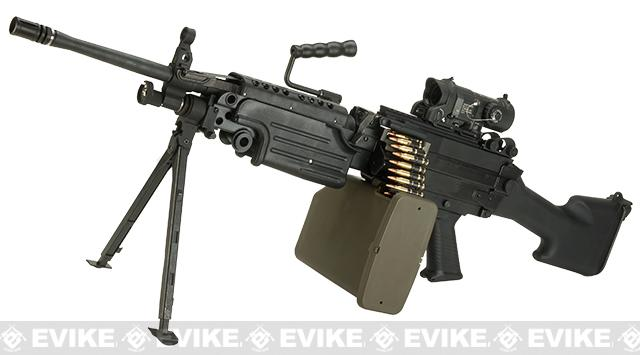
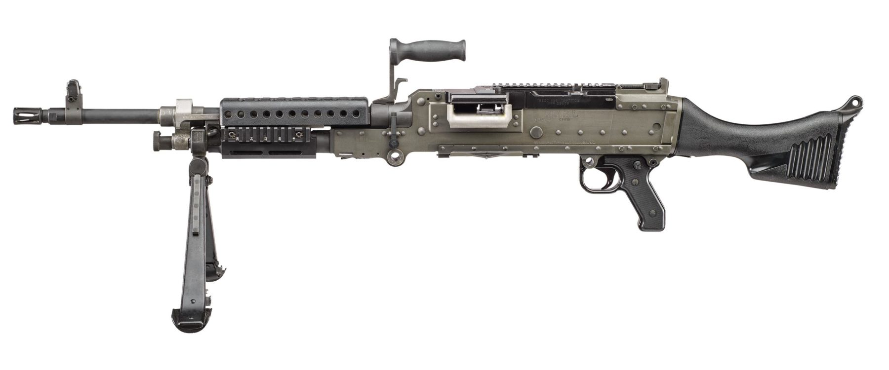

The M249 Squad Automatic Weapon (SAW) is a light wieght machine gun ment to be operated by a single person. It is fired from the open bolt position,
meaning the bolt assemlby
needs to be to the rear before the triger is pulled to operate correctly, and can be loaded from a belt or magazine configuration.
This weapon shoots 5.56mm ammunition which can travel up to 3,000 feet per second. The SAW can engage a point target up to 800 meters and an area
target up to 1000 meters,
depending on the use of the bi-pod or tri-pod. With a length of 40.74 inches and a weight of 18 pounds, this weapon is a force
to be reckond with on the battlefield and
is a must have in most fire team weapon combinations.
To learn more about the M249 SAW, click on the image to the right.

The M240B Machine Gun is a belt fed, air-cooled, gas operated, fully automatic machine gun that fires from the open bolt position. It can be mounted on a bi-pod,
tri-pod, aircraft or
vehicle to allow for better precision and more manuverability. This weapon weighs 27.6 pounds, is 49 inches long, and has a combat load of
800 rounds of ammunition. It also requires
two individuals to operate, the gunner, and the assitant gunner that carries the ammo.
The M240B Machine Gun fires a 7.62mm round at a velocity up to 2,800 feet per second. It can engage a point target of 600 meters and an area target of 800 meters,
when utilizing the
bi-pod, and has a maximum range of 3725 meters. The M240B is best used as a defensive weapon on sentry posts and during convoy protection.
Just the sound of this weapon rattling off
its payload, at 950 rounds per minute, is more than enough provide cover fire.
To learn more about the M240B Machine Gun, click on the image below.
